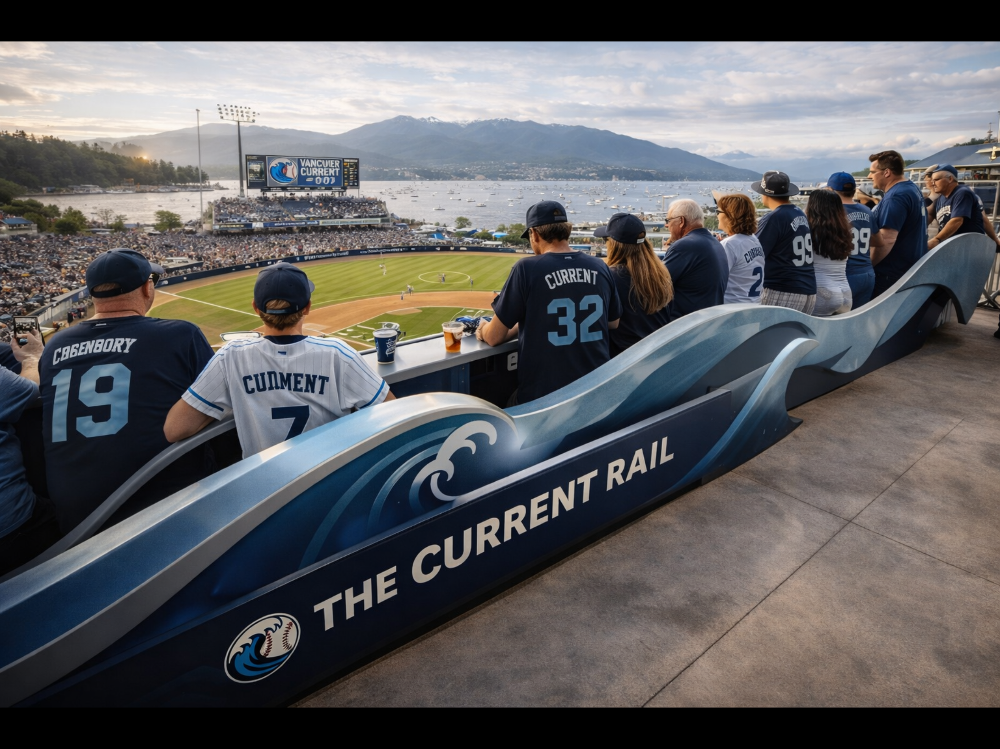
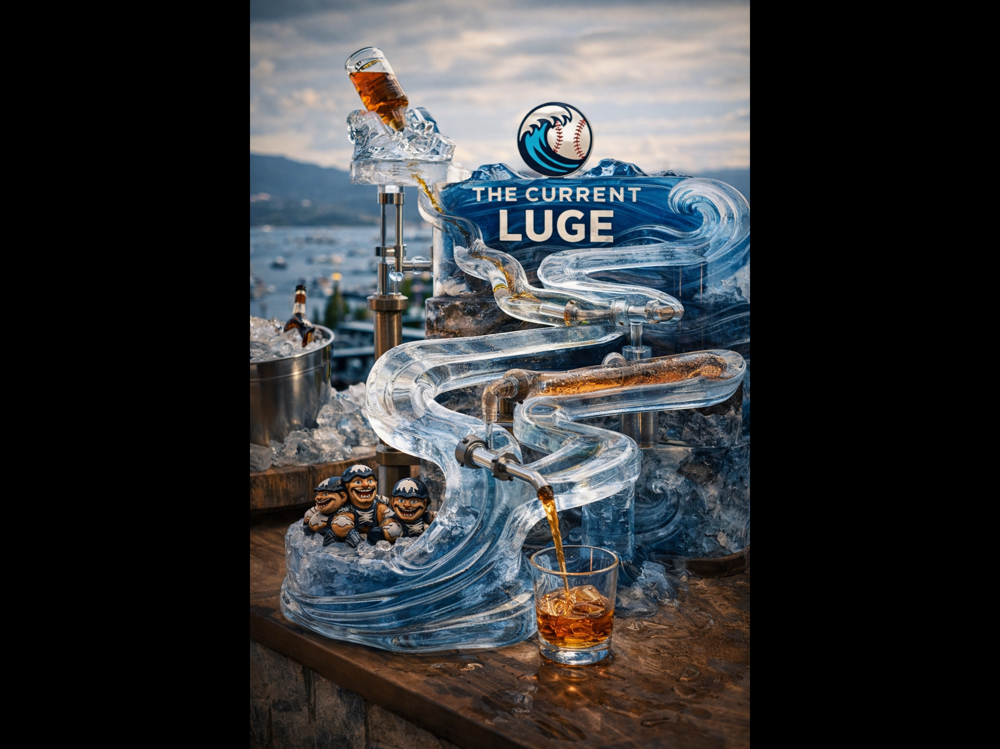
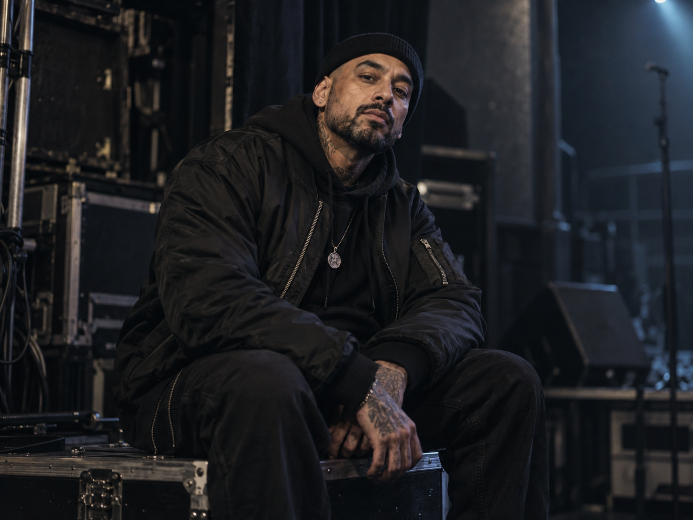
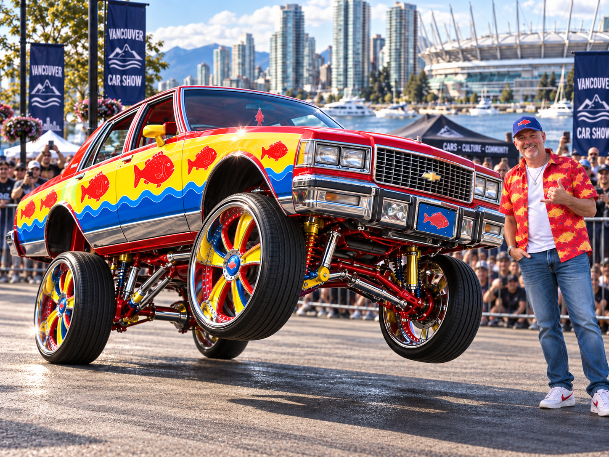

Miles Harker
Play-by-play. Harker calls Vancouver games with a measured, low-hype cadence, leaving room for crowd noise, weather, and the long pauses that define a close game at WAP MOP SHOPPE STADIUM.
WAP MOP SHOPPE STADIUM. Glass, rain, seawall noise, and the city moving around the game.

The Current are quieter than many GLB crowds until the game begins to turn. Then the sound arrives all at once. The club’s identity is coastal without becoming nautical costume: wet concrete, glass, transit, seawall traffic, reflected light, and a baseball park that feels connected to the city around it.


Play-by-play. Harker calls Vancouver games with a measured, low-hype cadence, leaving room for crowd noise, weather, and the long pauses that define a close game at WAP MOP SHOPPE STADIUM.

In-stadium announcer. Cho handles lineups, player introductions, scoring announcements, promotions, and the pacing between pitches. His voice belongs to the stadium, not the broadcast booth.

Vancouver Current mascot. A sideline presence rather than a constant performer—appearing at field level, crowd aisles, and club events.

Supporters watch closely and react in waves: long stretches of attention, then sudden volume when an inning changes direction.

Cold Psych appears in the Vancouver club archive as part of the entertainment program around WAP MOP SHOPPE STADIUM. The act’s full club file remains open for expansion.

Ron Draper represents Vancouver in DONK with a bright, candy-colored Swedish Fish-themed hydraulic show car. DONK is an independent competition circuit using selected GLB venues; it is not a baseball program or a division of GLB.